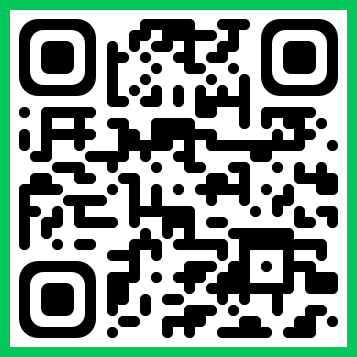

초등학생 학습 설문조사 안내
초등학교 5~6학년 담임선생님께 드리는 설문 협조 안내
설문 안내
연구 목적
본 설문은 초등학생의 학습 과정에서 나타나는 생각과 도움요청 행동을 이해하기 위한 연구입니다. 학생들의 응답은 석사학위 논문 연구 자료로 활용될 예정입니다.
참여 대상
초등학교 5~6학년 학생
소요 시간
약 10분 내외
응답 방식
학생들이 개별적으로 설문 링크 또는 QR코드에 접속하여 응답하는 방식으로 진행됩니다.
개인정보 보호
본 설문은 익명으로 진행되며, 이름 등 개인을 직접 식별할 수 있는 정보는 수집하지 않습니다. 응답 내용은 연구 목적으로만 사용됩니다.
담임선생님께 드리는 유의사항
실시 전 안내
본 설문은 성적이나 평가와 관련이 없으며, 정답이 있는 검사가 아닙니다. 학생들이 자신의 생각에 가장 가까운 응답을 편안하게 선택할 수 있도록 안내해 주시면 감사하겠습니다.
자발적 참여
설문 참여는 자발적으로 이루어지며, 학생은 원하지 않을 경우 참여하지 않거나 응답 도중 언제든 중단할 수 있음을 안내해 주시기 바랍니다.
개별 응답
학생들이 서로 답을 의논하거나 비교하지 않고, 자신의 생각에 따라 개별적으로 응답할 수 있도록 안내해 주시기 바랍니다.
응답 유도 금지
문항 이해가 어려운 학생에게 문항을 다시 읽어 주는 정도의 도움은 가능하지만, 특정 응답을 고르도록 설명하거나 답변 방향을 유도하지 않도록 유의해 주시기 바랍니다.
실시 환경
가능하면 조용한 시간에 학생들이 개별 기기로 설문에 접속하여 응답할 수 있도록 안내해 주시면 감사하겠습니다.
학생 제공용 QR코드 및 설문 링크

QR코드를 클릭하면 크게 볼 수 있습니다.
QR코드 접속이 어려운 경우
학생들이 QR코드 사용이 어려운 경우, 아래 설문 링크를 제공하여 참여할 수 있도록 안내해 주시면 됩니다.
https://docs.google.com/forms/d/e/1FAIpQLSf_dV2IvUvO5rfWkOySVcJe1-Ncp60RifQLkCgFc7NoBvtLKQ/viewform?usp=header
연구자
김진경
한국교원대학교 대학원 초등교육과
E-mail: 이메일주소입력